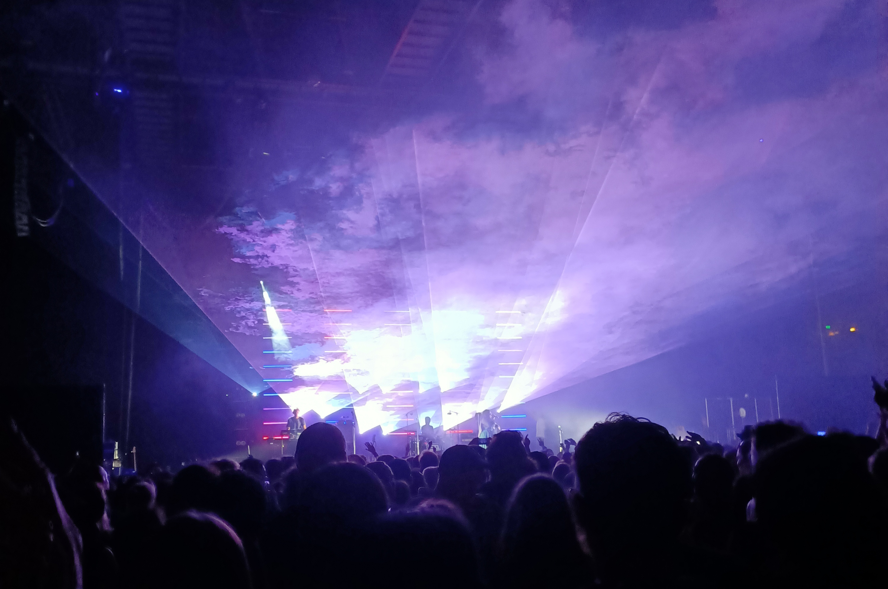

Evening
On Sunday the 27th of November 2022, I saw Groove Armada perform at the TSB Arena located on Queens Wharf, Wellington, NZ.

I hadn’t explicitly listened to much of their music prior to the concert, although I played their essentials compilation and recognised a lot of tunes.
Band
Groove Armada are an electronic music duo who were active around the late 90s / early 00s. They are within the bedrock of the British electronic music scene, amongst the likes of: Chemical Brothers, Massive Attack, The Prodigy…
Performing live they played with a full band, consisting of:
Andy Cato (song-writer) – Bass, Trombone, Synth
Tom Findlay (song-writer) – Guitar, Synth
Michael Anthony Daniels – MC
unknown x – Vocals
unknown y – Vocals
unknown z – Drums
unknown a – Synth
TSB Arena
TSB Arena is one of the biggest venues in Wellington with a capacity of around 5,000 people.
Sound was rock solid! There was never a moment where one instrument over powered another. Vocals, trombone, drums, bass, guitar and synth could all distinctly be heard, which is a challenge, particularly in large venues. Kudos to the sound-engineer/team.
Beer was $10 a can.
Performance
Groove Armada’s performance was energetic, all songs were performed with intent to move the crowd. Both female singers were powerful in their presence and vocals took centre stage in songs that had words.
Vocalists and the MC were able to lay down catchy vocal hooks propped up by a steady tempo the drums and bass kept. Bass was often drenched in distortion which created a wider/dirtier audio range for guitar and synth to stylise.
Many times throughout the set drums took me by surprise. Timing was impeccable, and played with perfect dynamic control. Often, as the beat settled down, it blasted back into action jolting listeners attention.
Trombone appeared on multiple tracks. The blunt, goofy tone of trombone swayed the audience, lulling goers into a relaxed yet awake state.
Thoughts
Groove Armada attracted a vast demographic of listeners. This wide range of attendees made for a very peaceful crowd, people genuinely cared for others, and it was possible to feel a sense of well-being emanating from the crowd. The concert was also on a Sunday, so most concert-goers will have had work on Monday. This may been a factor towards the absence of drunken antics usually elicited from punters at large music events.
Final Rating
Band: 4/5 (really good)
Venue: 4/5 (really good)
Evening: 3/5 (good) * low-scoring because hungover…
Rating System
1 (bad); 2 (not bad); 3 (good); 4 (really good); 5 (amazing)